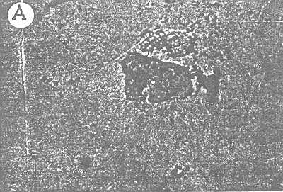
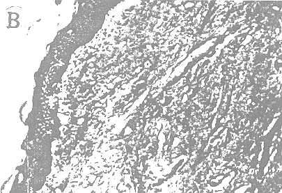

THE CIRCUMCISION REFERENCE LIBRARY
From the Jawaharlal Institute of Post-Graduate Medical Education and Research, Pondicherry, India
[CIRP Note: This report appeared in 1973. At that time, the true etiology of penile and cervical cancer was unknown. The principal risk factors have now been identified as the presence of the Human Papilloma Virus (HPV) and smoking. Smegma itself is not carcinogenic.
A collection of necrotic debris under the prepuce in the uncircumcised male subject is a common occurence unless the prepuce is retracted and the area cleansed. This debris is popularly known as smegma, a word of Greek origin meaning soap or salve. It is generally believed to be a secretion of glands thought to be located in this region and often termed Tyson's glands.1-4 However there appears to be no acceptable evidence to indicate the existence of these glands.
Since smegma has been incriminated as a possible etiological factor in carcinoma of the penis and of cervical carcinoma, we believed it imperative to undertake a study of this substance, particularly since the incidence of these types of carcinoma is high in our part of the world.
The material included 1) as investigation of the subpreputial status of 1,000 male subjects seen as outpatients and of 98 patients treated surgically for phimosis; 2) a review of cases of carcinoma of the penis treated in the previous 5 years; 3) a physical biochemical, bacteriological and microscopic examination of the smegma collection and 4) a histological study of the inner lining of the prepuce, corona glandis and also the glans in cadavers.
The status of the preputial collection in subjects with phimosis and in those without phimosis is summarized in tables 1 and 2, respectively. Sixty per cent of the subjects without phimosis were members of an extremly low income group and they accounted for more than 75 per cent of the smegma-positive subjects. Among 98 patients with phimosis from all age groups, only 12 had a subpreputial collection. The review of cases of carcinoma of the penis revealed that 100 cases had been treated in the last 5 years. All of these patients derived from the poor strata and most were laborers. There was evidence of previous inflammatory episodes and 21 percent had phimosis as compared to an incidence of 12 per cent among the over-all outpatient population.
Physical characteristics. The collection tended to take the color of the inner lining of the prepuce and was darker in highly pigmented individuals. In most subjects it was dry, scaly or mealy and odorless The characteristic odor was noted in a few instances was wet and slimy.
Bacteriology. There was a mixed flora. The smegma bacillus was identified in approximately 50 per cent of the cases.
Biochemistry. Biochemical study of pooled, desiccated smegma revealed an average value of 26.6 per cent fats and 13.3 per cent proteins, which is consistent with necrotic epithelial debris.
Microscopy. Microscopic examination revealed a lot of amorphous material and some dead epithelial cells (part A of figure)


A, Smear from smegma
shows epithelial debris and desquamated effete cells. H &
E, reduced from 10 X 100.
B, inner layer of prepuce. Note absence of any
glandular structure.
Histology. Histologic findings are summarized in table 3. Detailed examinations were performed on 128 specimens. Multiple small pieces were taken from the inner lining of the circumcised prepuce and also from the glans lining in cadavers. The pieces were serially sectioned and every fifth section was studied using hematoxylin and eosin stain. A special search was made for glandular tissue. No such tissue was found in the material (part B of figure). Chronic inflamatory changes and scarring were noted in most of the material from adults.
No. Cases (%)
Thin coating on careful inspection 198 (20) Obvious thin layer 141 (14) Layer 1 mm in thickness 41 (4) Thick caked, gross collection 20 (2) No smegma 600 (60) Total 1000(100)
No. Cases
Congenital phimosis 50 Acquired phimosis 48 Smegma present 6 Atypical accretion of smegma 6 Smegma absent 86 Adhesion: Mild 15 Severe 5 Associated meatal stenosis 10
Smegma appears to be desquamated epithelial debris collecting in the preputial fold and is not the product of glandular secretion. This finding is in agreement with the observations of Keith and Shillitoe,4 Steive (cited by Dickinson)5 and Arey.6 If allowed to collect, this material leads to inflammation and chronic irritation of this region and the prepuce causing a narrowing or, in some cases adhesions between the glans and the prepuce. The high incidence of phimosis--21 percent in those treated carcinoma and 12 percent in the over-all outpatient population--can definitely be ascribed to a lack of personal hygiene since this causes inflammation and secondary phimosis. Since most patients are unaware that the prepuce was retractable, the history of phimosis often appeared to be from birth. When the opening in the prepuce was narrowed, smegma accumulation was absent if there were no adhesions; the restriction to the flow of urine perhaps flushed the space resulting resulting in an absence of this material in most of these cases.7
Table 3
Material No. Biopsy result
Pts.
Biopsy from corona-glandis 25 No glandular structure Prepuce removed at operation 83 No glandular structure (inner lining sectioned) Glans penis with prepuce from cadavers of newborn to old age 20 No glandular structure Total 128
Chronic inflammation in sinuses, scars and so on is known to cause an irritation of epidermal tissues, leading to an epithelioma. A similar pathogenesis at this site deserves serious consideration.
A detailed study of the subpreputial collections and histological study of 128 specimens led us to conclude that there appears to be no evidence of any glandular tissue in the subpreputial region of the penis. Smegma is an epithelial debris collecting in this space. This collection, if not removed, leads to chronic inflammation of the glans and prepuce resulting in secondary phimosis, which in turn appears to be associated with penile carcinoma as suggested by a review of cases.
http://www.cirp.org/library/anatomy/parkash/